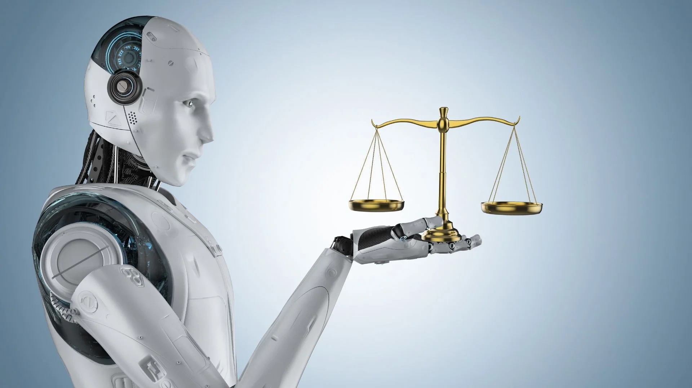

AI systems can inherit and amplify human biases, potentially leading to discrimination in hiring, lending, or access to services. Ethical oversight is essential to prevent harm.
Learn more at Fairness and Bias in AI Explained .

AI often handles massive amounts of personal data, which may be vulnerable to misuse or breaches. Safeguards and transparency are crucial to protect individuals.
Automation can replace repetitive tasks, potentially causing unemployment or inequality. It's important to monitor AI's impact on the workforce and communities.
AI-generated deepfakes and misinformation can mislead, manipulate, or damage reputations. Strategies to detect and prevent misuse are critical for safety.
AI needs clear ethical and legal frameworks to prevent harm. Transparency, accountability, and responsible use are key to mitigating risks.